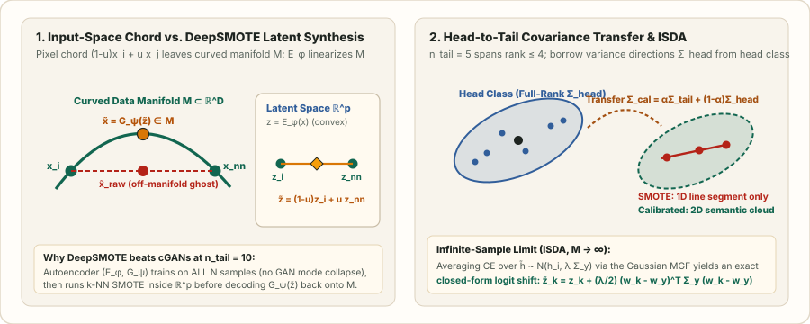

SMOTE in High Dimensions: DeepSMOTE, Manifold Interpolation, and Semantic Covariance Transfer
Why Euclidean $k$-NN and convex chords fail in high-dimensional pixel/token spaces, how DeepSMOTE moves $k$-NN synthesis into an autoencoder bottleneck without GAN mode collapse, and how head-to-tail covariance transfer and ISDA synthesize full-rank semantic variations in closed form.
In Chapter 03, SMOTE, Borderline-SMOTE, and ADASYN operated directly on low-dimensional tabular coordinates $x\in\mathbb R^d$. Why does applying SMOTE directly to $224\times 224\times 3$ images ($D=150{,}528$) or high-dimensional embeddings break down—and how do modern deep learning methods adapt SMOTE to representation space?
1. Two reasons raw SMOTE fails in high dimensions ($D\gg 100$)
Failure 1 — Euclidean distance concentration (Beyer et al., 1999): Suppose coordinate differences $x_{i,m}-x_{j,m}$ have mean $0$, variance $\sigma^2$, and bounded fourth moment $\mu_4$. By the Law of Large Numbers, the squared Euclidean distance $D_{ij}^2=\sum_{m=1}^D(x_{i,m}-x_{j,m})^2$ has mean $\mathbb E[D_{ij}^2]=2D\sigma^2$ and standard deviation $\mathcal O(\sqrt{D})$. Consequently, the relative contrast between the farthest and nearest neighbor vanishes at rate $1/\sqrt{D}$:
In raw pixel space ($D=150{,}528$), $\ell_2$ nearest neighbors match background lighting rather than semantic object identity.
Failure 2 — Off-manifold chords on curved data manifolds: Natural images lie on a low-dimensional curved submanifold $\mathcal M\subset\mathbb R^D$. If $\gamma:[0,1]\to\mathcal M$ is a unit-speed geodesic connecting $x_i=\gamma(0)$ and $x_{\text{nn}}=\gamma(s)$ with extrinsic curvature $\|\ddot\gamma(0)\|_2=\kappa>0$, Taylor-expanding $\gamma$ shows that the Euclidean SMOTE chord $\tilde x(u)=(1-u)x_i+u\,x_{\text{nn}}$ leaves the manifold by distance
At the midpoint $u=0.5$, the synthetic sample $\tilde x(0.5)$ is maximally off-manifold—appearing visually as a ghosted double-exposure of two unaligned objects.

2. DeepSMOTE: Autoencoder latent synthesis without GAN mode collapse
Why not train a conditional GAN (cGAN) to generate minority images? When $n_{\text{tail}}=10$, a high-capacity GAN discriminator memorizes the $10$ real minority images within a few epochs, driving the generator into mode collapse. Dablain et al. (IEEE TNNLS 2022) proposed DeepSMOTE, which eliminates the discriminator entirely:
- Train an Encoder–Decoder $(E_\phi,G_\psi)$ across all $N$ training images (both majority and minority) so the encoder learns rich visual primitives from the abundant head classes.
- Enforce latent cluster geometry via a cyclic permutation reconstruction loss: Given a mini-batch $X_B$ from a single class, encode $Z_B=E_\phi(X_B)$, cyclically shift the latent codes $\tilde Z_B=\operatorname{Roll}(Z_B,1)$ (or pick a random same-class partner), and penalize both self-reconstruction and cross-member reconstruction:
$$\mathcal L_{\text{DeepSMOTE}}(\phi,\psi)=\frac{1}{|B|}\sum_{i\in B}\Bigl(\bigl\|x_i-G_\psi(E_\phi(x_i))\bigr\|_2^2+\lambda_{\text{perm}}\bigl\|x_i-G_\psi(E_\phi(x_{\pi(j)}))\bigr\|_2^2\Bigr).$$The second term forces same-class latent codes $z_i=E_\phi(x_i)\in\mathbb R^p$ to cluster tightly and change smoothly across class-preserving variations.
- Latent $k$-NN SMOTE at generation time: Encode all minority samples $z_i=E_\phi(x_i)$, compute $k$-NNs in the compact latent bottleneck $\mathbb R^p$ ($p\in[64,512]$), interpolate $\tilde z=z_i+u\,(z_{i,r}-z_i)$, and decode $\tilde x=G_\psi(\tilde z)\in\mathcal M$.
3. Rank deficiency of tail SMOTE & Head-to-Tail Covariance Transfer
Even inside a well-trained latent space $h=f_\theta(x)\in\mathbb R^d$ ($d=512$), suppose a tail class $k$ has only $n_k=5$ examples $\{h_1,\dots,h_5\}$. Any convex or affine combination $\tilde h=\sum_{i=1}^5 \alpha_i h_i$ with $\sum_i\alpha_i=1$ lies strictly inside a $4$-dimensional affine subspace ($\operatorname{rank}(\hat\Sigma_k)\le n_k-1=4$). In the remaining $d-(n_k-1)=508$ feature directions, SMOTE produces zero variance!
Head classes, however, have $n_{\text{head}}\gg d$ examples that capture generic intra-class variations (pose, lighting, background context, camera angle). Let $(\hat\mu_j,\hat\Sigma_j)$ be the empirical mean and covariance of head class $j$. We calibrate the tail class $k$’s distribution by shrinkage toward the closest head class(es):
Worked 2D numerical example: Suppose $d=2$ and a tail class has only $n_{\text{tail}}=2$ embeddings $h_1=(1.0,2.0)^\top$ and $h_2=(3.0,2.0)^\top$. Then $\hat\mu_{\text{tail}}=(2.0,2.0)^\top$, and the raw sample covariance is rank-$1$ with zero vertical variance ($h_{1,2}=h_{2,2}=2.0$):
Every SMOTE point between $h_1$ and $h_2$ has second coordinate identically equal to $2.0$. With shrinkage $\alpha=0.25$, the calibrated covariance becomes full-rank:
allowing synthetic tail features $\tilde h\sim\mathcal N(\hat\mu_{\text{tail}},\Sigma_{\text{cal}})$ to vary along the vertical semantic axis ($0.90$) learned from the head class.
4. Taking $M\to\infty$ synthetic samples in closed form: ISDA
If we draw $M$ Gaussian feature perturbations $\tilde h_m\sim\mathcal N\bigl(h_i,\,\lambda\Sigma_{\text{cal}}(y_i)\bigr)$ around a feature vector $h_i$ with label $y=y_i$, do we have to run $M$ forward passes through the linear classifier $z_c=w_c^\top\tilde h+b_c$? Wang et al. (NeurIPS 2019, ISDA) showed that as $M\to\infty$, Jensen’s inequality and the moment generating function of a Gaussian ($\mathbb E[e^{v^\top\xi}]=\exp(\tfrac12 v^\top\Sigma v)$ for $\xi\sim\mathcal N(0,\Sigma)$) give an exact closed-form upper bound on the expected cross-entropy loss:
That is, synthesizing infinitely many Gaussian-SMOTE feature perturbations around $h_i$ reduces to adding the quadratic variance margin $\Delta_{y\to c}=\frac{\lambda}{2}(w_c-w_y)^\top\Sigma_{\text{cal}}(y)(w_c-w_y)$ to each competing logit $z_c$ inside standard Cross-Entropy!
5. PyTorch implementation: Calibrated Feature-SMOTE & Closed-Form ISDA Loss
import torch
import torch.nn as nn
import torch.nn.functional as F
class CalibratedISDALoss(nn.Module):
"""
Infinite-sample semantic feature augmentation (ISDA) with head-to-tail
shrinkage covariance calibration for long-tailed recognition.
"""
def __init__(self, num_classes: int, feat_dim: int, class_counts: torch.Tensor, tau0: float = 50.0):
super().__init__()
self.register_buffer("counts", class_counts.float())
self.register_buffer("alpha", class_counts.float() / (class_counts.float() + tau0))
self.register_buffer("cov_diag", torch.ones(num_classes, feat_dim))
@torch.no_grad()
def update_diagonal_covariances(self, features: torch.Tensor, targets: torch.Tensor, momentum: float = 0.9):
# Update per-class diagonal variance and calibrate tail classes using head variance mean
head_mask = self.counts >= self.counts.median()
head_var_prior = self.cov_diag[head_mask].mean(dim=0, keepdim=True)
for c in targets.unique():
h_c = features[targets == c]
if h_c.size(0) > 1:
var_c = h_c.var(dim=0, unbiased=True)
self.cov_diag[c] = momentum * self.cov_diag[c] + (1.0 - momentum) * var_c
# Shrinkage: Sigma_cal(k) = alpha_k * Sigma_k + (1 - alpha_k) * Sigma_head
a = self.alpha.unsqueeze(1)
self.cov_calibrated = a * self.cov_diag + (1.0 - a) * head_var_prior
def forward(self, features: torch.Tensor, classifier: nn.Linear, targets: torch.Tensor, lam: float = 0.5) -> torch.Tensor:
logits = classifier(features) # [B, K]
W = classifier.weight # [K, d]
w_y = W[targets] # [B, d]
sigma_y = self.cov_calibrated[targets] # [B, d]
# Quadratic margin: 0.5 * lam * sum_d (w_c - w_y)^2 * sigma_{y,d}
diff_sq = (W.unsqueeze(0) - w_y.unsqueeze(1)).pow(2) # [B, K, d]
quad_margin = 0.5 * lam * (diff_sq * sigma_y.unsqueeze(1)).sum(dim=-1)
return F.cross_entropy(logits + quad_margin, targets)6. Questions worth answering
A tail class with $n_K=10$ images does not contain enough visual diversity to train a convolutional encoder without overfitting. Training $(E_\phi,G_\psi)$ on all $N$ images lets the encoder learn generalizable edge, texture, and shape filters from head classes, so $k$-NN interpolation inside $\mathbb R^p$ follows meaningful semantic axes even for tail classes.
When $c=y$, the weight difference is $w_y-w_y=0$, so the quadratic shift $\frac{\lambda}{2}(w_y-w_y)^\top\Sigma_{\text{cal}}(y)(w_y-w_y)=0$ vanishes for the true class and is strictly non-negative for all competing classes $c\ne y$—acting as an adaptive, direction-aware margin.